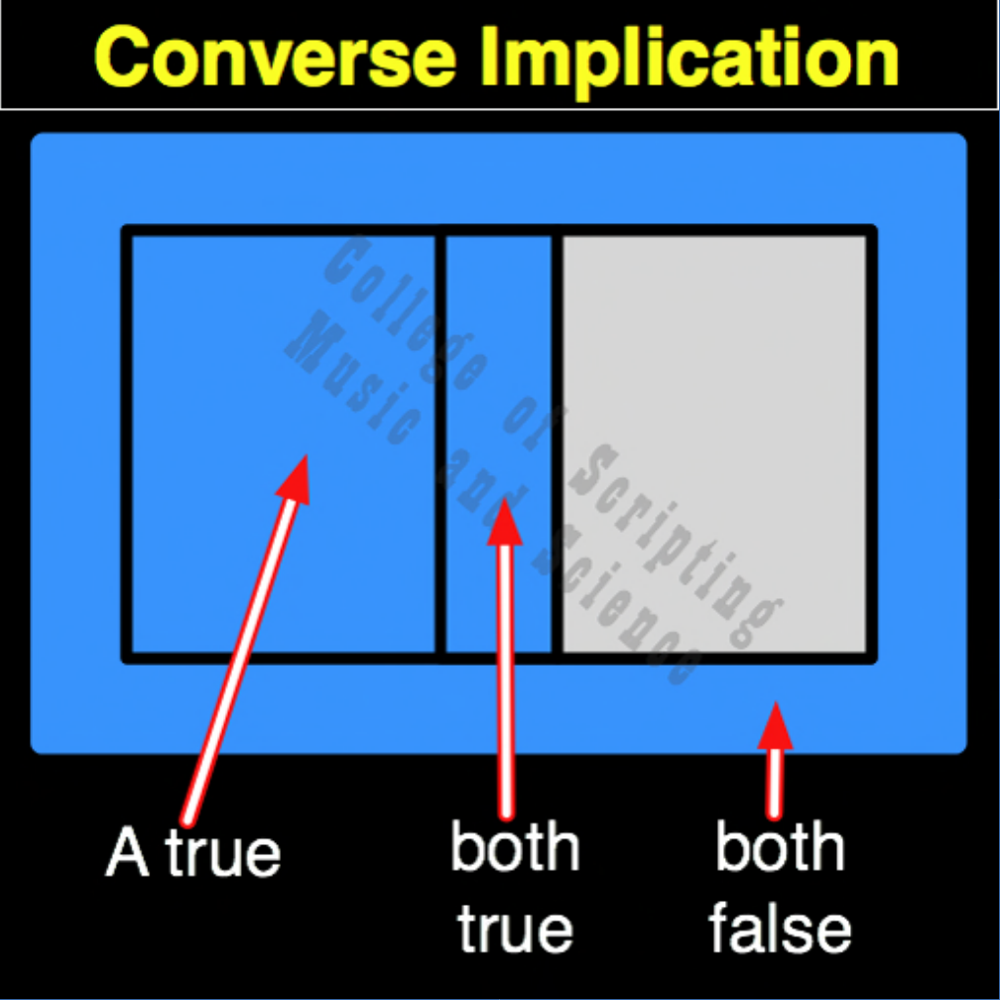

| CI | |
|---|---|
| 0 + 0 | = 1 |
| 0 + 1 | = 0 |
| 1 + 0 | = 1 |
| 1 + 1 | = 1 |

In the ethical architecture of Starfleet, Converse Implication (CI) represents the law of reciprocity and a crew's unwavering duty to the ship. It mathematically reverses the directional flow of MI. If a Crew Member (Input B) attempts to take unilateral, rogue action (1) while the Captain or Federation (Input A) has given no authorization (0), the system recognizes this as mutiny and outputs a total failure (0). A Starfleet officer cannot act with authority if they abandon their foundational chain of command. In all other states, whether both are resting (0,0), the Captain acts alone (1,0), or both act in unison (1,1), the system maintains perfect stability (1).
| CI Gate FLIPPED to make CNI Gate | |
|---|---|
| 0 + 0 = 1 | FLIPPED becomes 0 |
| 0 + 1 = 0 | FLIPPED becomes 1 |
| 1 + 0 = 1 | FLIPPED becomes 0 |
| 1 + 1 = 1 | FLIPPED becomes 0 |
CI is the OPPOSITE of CNI.
CI RETURNS FALSE (0) ONLY WHEN THE EFFECT (B) IS TRUE BUT THE CAUSE (A) IS FALSE.
Because the inputs are directional, CI is not its own mirror. Its MIRROR and its REVERSE are both MI (Material Implication).
// gateCi.js
function gateCi(a, b)
{
// The system fails (0) ONLY if the Crew acts (B=1) without Authorization (A=0).
if (a == 0 && b == 1)
{
// Rogue action detected (Mutiny / Protocol Violation)
return 0;
}
else
{
// Chain of command respected
return 1;
}
}
//----//
/*
CI
1011
A B
0 0 = 1
0 1 = 0
1 0 = 1
1 1 = 1
Opposite: CNI
*/